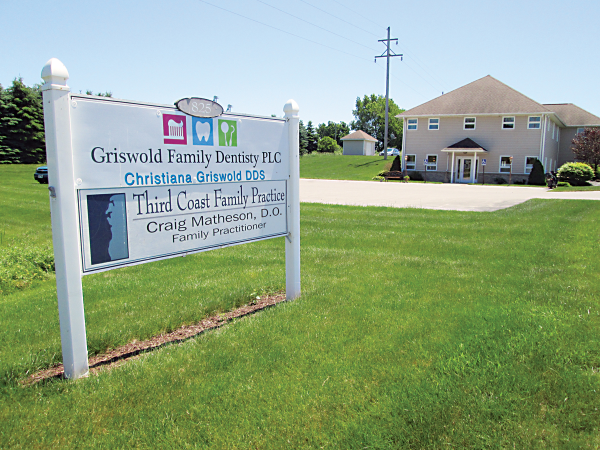

The Third Coast Family Practice building
Third Coast
Family Practice strives to be your PATIENT CENTERED MEDICAL HOME. This national model for delivering care recognices that the best health care is the result of a Patient-Provider Partnership. A Medical Home is the hub of all information and communication so that you and Dr. Matheson can work together to keep you healthy, use appropriate preventative services, and successfully manage illnesses.
As your Medical Home, we trust you to:
- Ask questions, share your feelings, and be part of your care.
- Provide timely updates to changes in your personal information and insurance.
- Be honest about your medical history, symptoms, and how you take your medications. Tell us of any vitamins, supplements, or illegal drugs you use. Tell us promptly of any changes in your health or well being. If your memory isn't good, bring an advocate with you to appointments.
- Take all your medecine and follow your medical provider's advice. Tell us if cost or some other reason is preventing you from following Dr. Matheson's advice.
- Make healthy decisions about your daily habits and lifestyle
- Be sure to tell us about treatments, medicines, or testing provided by other doctors
- Be timely and keep your scheduled appointments. Come prepared with questions and reschedule in advance if necessary.
- Call your Medical Home FIRST with all medical problems, unless it is a medical emergency
- End every visit with a clear understanding of your doctors expectations, treatment goals, prescriptions needed, and future plans.

About Dr. Matheson
- Doctor of Osteopathy, 1987, Chicago College of Osteopathic Medicine. Internship, 1988, Chicago Osteopathic Hospital
- Family Practice Residency, 1988 - 1991, Christ Hospital, Chicago, Illinois
- American Academy of Family Pracice, Board Certified 1991; recertification 1997, 2003 & 2011
- Private practice in Michigan since 1991
- AMA Certified EPEC Trainer, (Education fo Physicians on End-of-Life Care) 1999
- Member of CHADD (Children with Hyperactivity Attention Deficit Disorder)
- Board of Directors, Physician Organization of West Michigan